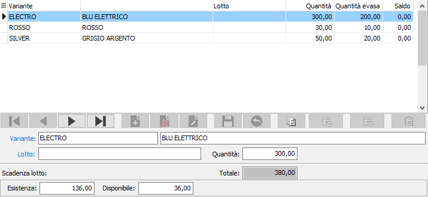

Dettaglio quantità (ordini/offerte/disposizioni/RDA/RDO)
 Se la gestione dettagli è attiva e collegata al documento e non si è nella fase di primo inserimento non sarà possibile inserire manualmente la quantità, ma al momento di accedere al campo quantità, o con l'apposito bottone dettaglio, si aprirà la seguente finestra nella quale è possibile inserire o manutenere il dettaglio delle quantità per singoli lotti relativi al prodotto che è presente sul rigo del documento o singole varianti o singole ubicazioni in base a come configurato sul prodotto. Nel caso il dettaglio contenga sia la variante che il lotto, sarà sufficiente inserire almeno uno dei due elementi; nel caso venga inserita solo la quantità saranno utilizzati per il salvataggio i valori di variante, lotto e/o ubicazione base se inseriti nelle configurazioni, altrimenti si dovrà obbligatoriamente inserire un codice.
Se la gestione dettagli è attiva e collegata al documento e non si è nella fase di primo inserimento non sarà possibile inserire manualmente la quantità, ma al momento di accedere al campo quantità, o con l'apposito bottone dettaglio, si aprirà la seguente finestra nella quale è possibile inserire o manutenere il dettaglio delle quantità per singoli lotti relativi al prodotto che è presente sul rigo del documento o singole varianti o singole ubicazioni in base a come configurato sul prodotto. Nel caso il dettaglio contenga sia la variante che il lotto, sarà sufficiente inserire almeno uno dei due elementi; nel caso venga inserita solo la quantità saranno utilizzati per il salvataggio i valori di variante, lotto e/o ubicazione base se inseriti nelle configurazioni, altrimenti si dovrà obbligatoriamente inserire un codice.
Per ogni dettaglio viene indicata, oltre la quantità inserita, la quantità già evasa e l'eventuale quantità a saldo.
Nel caso in cui, da questa finestra non sia possibile intervenire sui dati presenti, significa che la quantità del rigo del documento non è modificabile, ad esempio perchè il rigo deriva dall'evasione di un altro documento.
Per i documenti del ciclo attivo, se gestiti i lotti ed impostato in configurazione lotti l'apposito parametro, sarà effettuata, in fase di inserimento, la generazione automatica; accedendo in modo automatico alla finestra di assegnazione ed inserendo la quantità saranno selezionati i lotti in base alla priorità, presente sul prodotto, ed alla giacenza.

VARIANTE: codice della variante da inserire nel dettaglio delle quantità. Sul campo sono disponibili le funzioni di ricerca (F9).
UBICAZIONE: codice dell'ubicazione da inserire nel dettaglio delle quantità; Sul campo sono disponibili le funzioni di ricerca (F9).
LOTTO: codice del lotto da inserire nel dettaglio delle quantità; il lotto dovrà essere relativo al prodotto presente sul rigo del documento. Se il lotto inserito non esiste sarà richiesto l'eventuale caricamento. Sul campo sono disponibili le funzioni di ricerca (F9). Se gestito in configurazione il progressivo del lotto, sarà disponibile il tasto funzione F11 per generare automaticamente un nuovo codice lotto.
QUANTITÀ: campo numerico che definisce la quantità per il dettaglio inserito.
All'uscita dalla finestra di dettaglio, il totale del dettaglio sarà riportato automaticamente nel campo quantità del rigo corrente del documento.
Solo se sul documento è attiva la gestione dei lotti sarà visualizzato il pulsante di Assegnazione.
 Il pulsante attiva la finestra di assegnazione lotti, se esistono lotti con esistenze positive per il prodotto attivo.
Il pulsante attiva la finestra di assegnazione lotti, se esistono lotti con esistenze positive per il prodotto attivo.

La finestra consente l'assegnazione dei lotti esistenti, in modo manuale, utilizzando il campo quantità in basso per indicare la quantità da utilizzare per quel lotto, oppure in modo automatico utilizzando il campo quantità totale richiesta, dove inserire  la quantità massima selezionabile ed il pulsante di Assegnazione. La pressione del pulsante effettua un conteggio sui lotti visualizzati, nell'ordine previsto sul prodotto, selezionando le quantità esistenti fino ad arrivare al valore inserito nel campo quantità totale richiesta; i lotti selezionati per il totale dell'esistenza appariranno evidenziati di giallo, quelli selezionati parzialmente di un colore diverso. La pressione del pulsante Salva effettuerà l'assegnazione definitiva. Nella finestra è possibile visualizzare anche i lotti con esistenza zero o negativa spuntando le relative caselle.
la quantità massima selezionabile ed il pulsante di Assegnazione. La pressione del pulsante effettua un conteggio sui lotti visualizzati, nell'ordine previsto sul prodotto, selezionando le quantità esistenti fino ad arrivare al valore inserito nel campo quantità totale richiesta; i lotti selezionati per il totale dell'esistenza appariranno evidenziati di giallo, quelli selezionati parzialmente di un colore diverso. La pressione del pulsante Salva effettuerà l'assegnazione definitiva. Nella finestra è possibile visualizzare anche i lotti con esistenza zero o negativa spuntando le relative caselle.